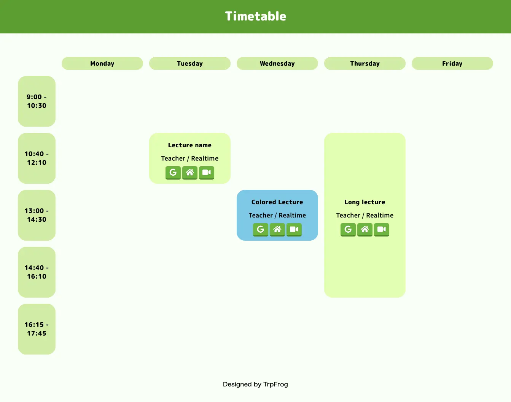
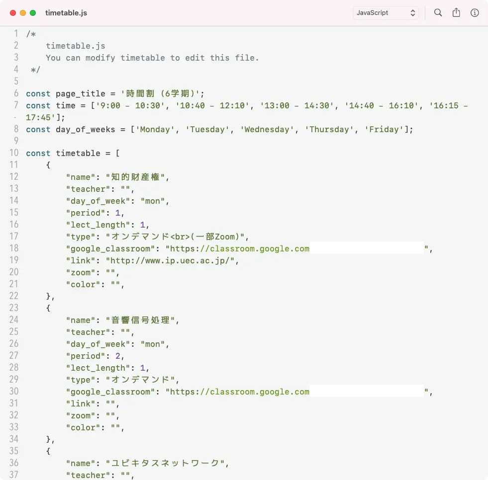
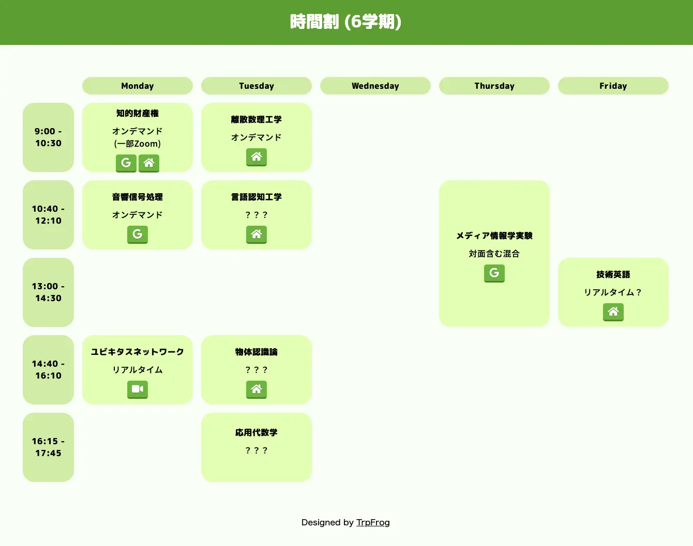

時間割がブラウザのホームページにあると便利！

これは何？
オンライン授業、アクセスするサイトがたくさんあって大変ですよね。僕はこんな感じのページを作ってリンクをまとめて対処していました。強いみなさんならもう勝手に作ってそうですが、せっかくなので使いやすくまとめてGitHubで公開してみました！
使い方
使い方は簡単！
- リポジトリをcloneします
- timetable-example.js を timetable.js にリネームします
- テンプレートに従ってtimetable.jsに授業情報を書き込みます
- index.html を開くと時間割ができています！
すごい！
ちなみに timetable.js はこんな感じです。

割とわかりやすいのではないでしょうか。
これを保存してindex.htmlを開くとこうなります。

うふふ (関係ないですが、これは確定した時間割ではないです。結構単位を持っているのでガハハ)
仕組み
仕組みというほどの仕組みはありませんが、このjsファイルを読み込んで時間割情報をもとに適切な場所に書き込みます。CSS Grid Layout を使いました。CSS Grid Layout パワーで2時間以上連続する授業もつなげて描画できるようになっています。すごい！
その他
他には color.css に色の定数がまとまっているので、ここをいじるだけで配色を変えられます。つまみネット風の初期デザインアンチの方はぜひ。あと Zoomのリンク や Classroomのリンク が特殊なアイコンで表示されます！便利！
(2行しかないけど) ﾝｷﾞｯｸｽでなんかするDockerfileも置いたのでHTML直で開きたくないぜ！って人は使ってください。
その他詳しくは英語ですが(自己満足)(は？)README.mdをご覧ください。
注意
これで作った時間割を「外でも見たいぜ！」とか言ってインターネットにあげると情報が流出して死ぬので注意してください。Zoom授業に裸の淵野アタリが入ってきます。
ぜひ使ってみてね！さようなら